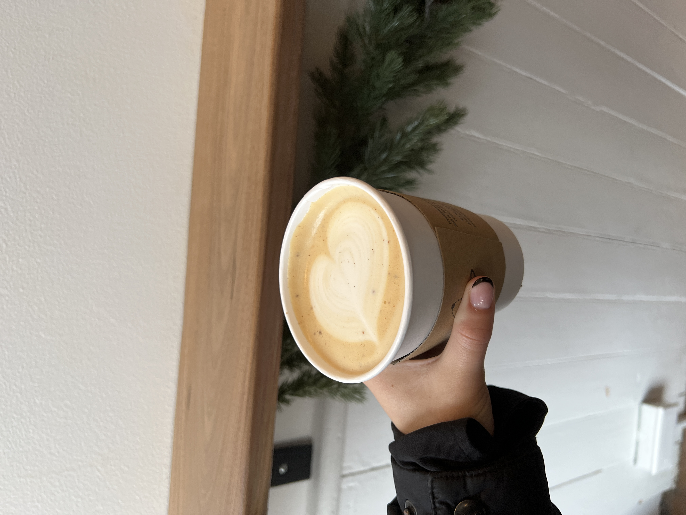
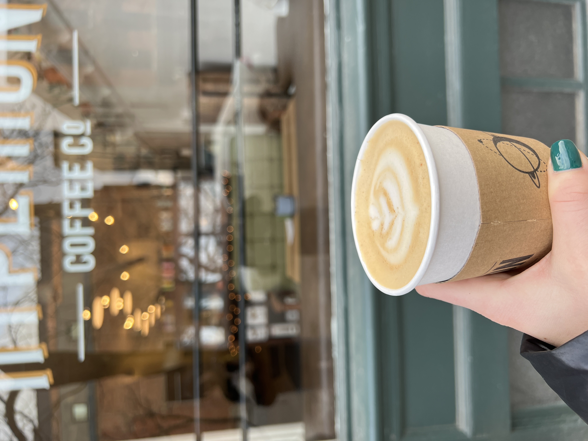
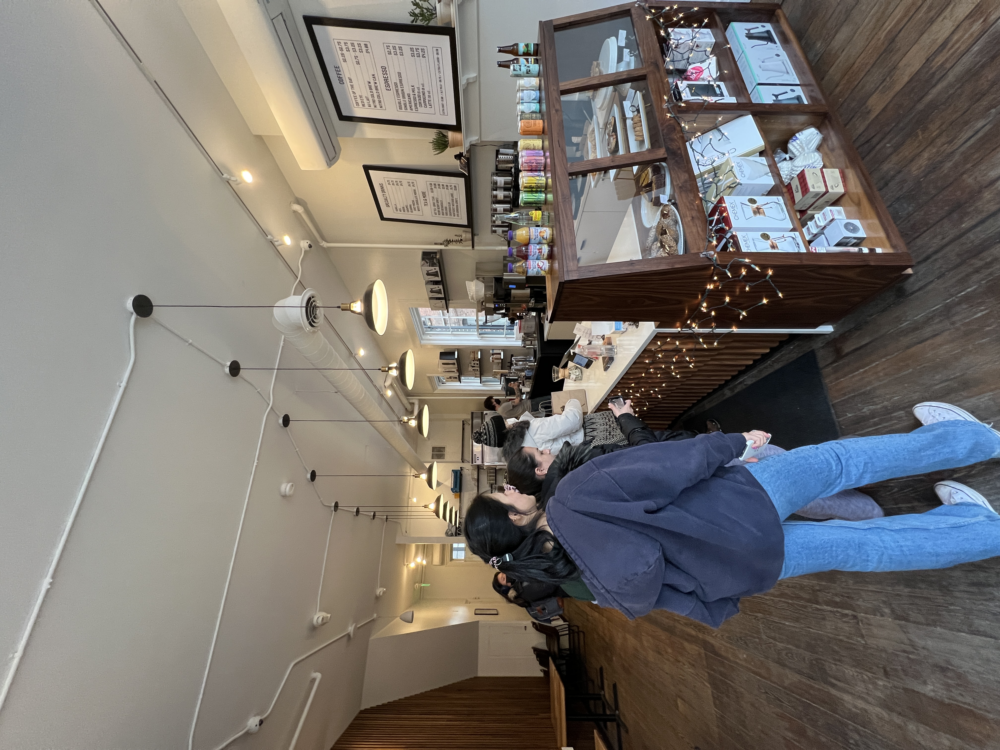
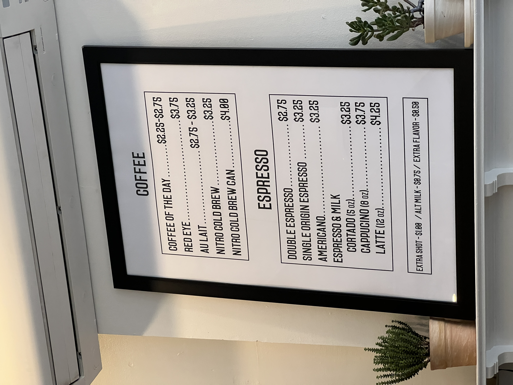
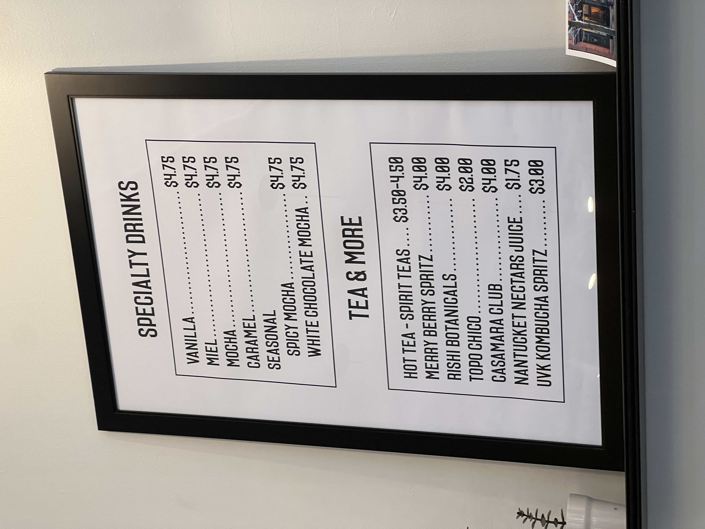
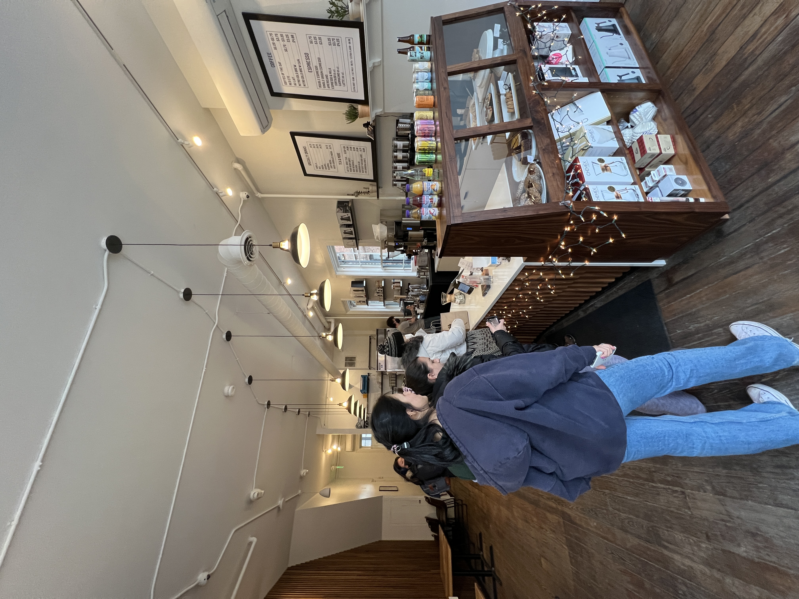
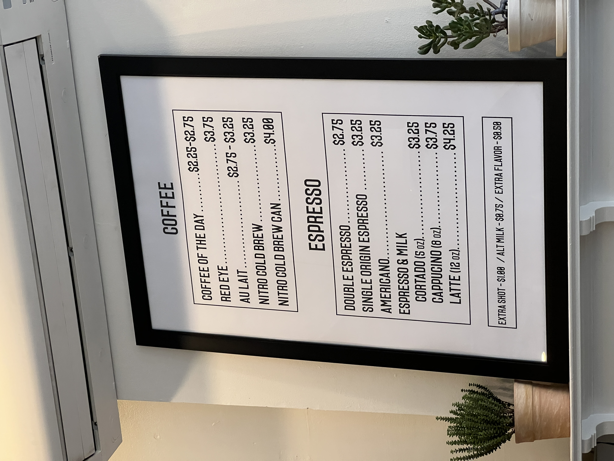
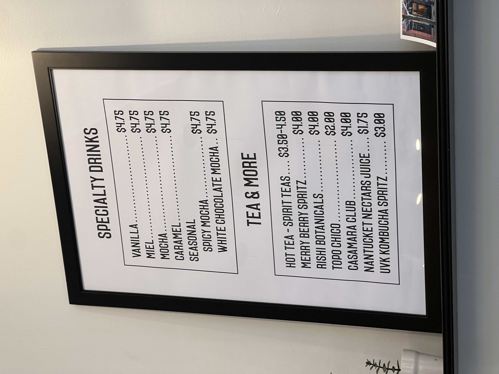
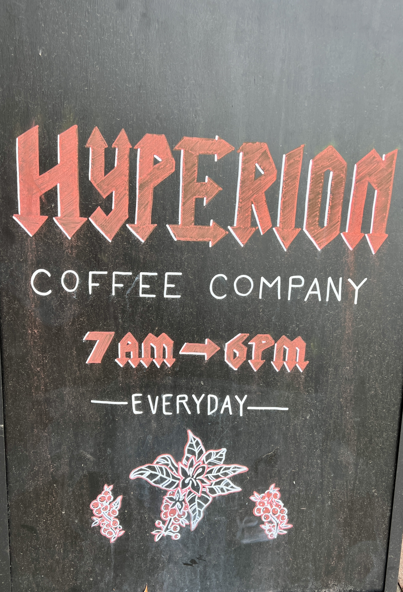
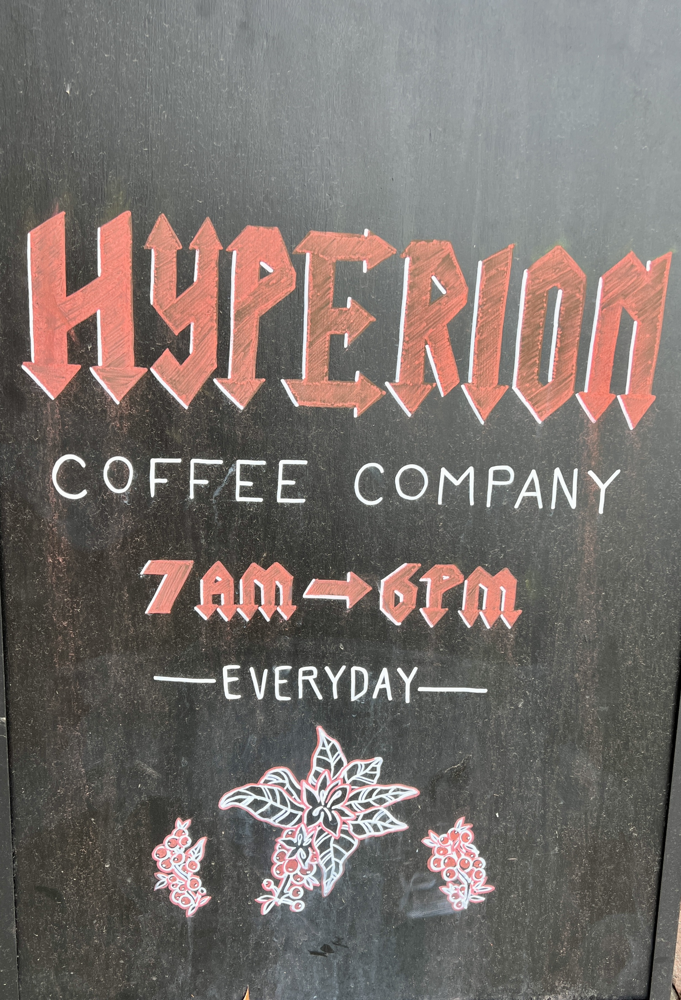

Hyperion Coffee was the first place I visited and was definitely my favorite! It is located on the corner of Main Street and W Liberty. The employees were friendly and the style of the shop was very cozy, which is ideal for college students. They had a variety of food options, like muffins, babka and so much more. I ordered a hot miel with oatmilk and it was absolutely delicious!
"I am from Seattle, WA, which we all know if coffee capital and when I tell you this place has some of the best coffee I've ever had. Their espresso is SO smooth and delicious on its own! Their lattes/mochas are always the perfect amount of sweetness. Not to mention their food is actually really good! Vegan/gluten free can be a little sketch at times but everything here is so yummy. Not to mention the folks that work there are so so sweet and genuine!" REVIEW FROM CUSTOMER
  






 
